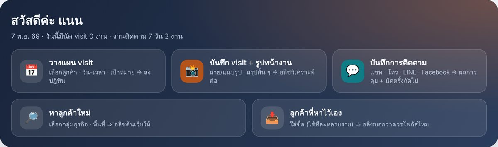
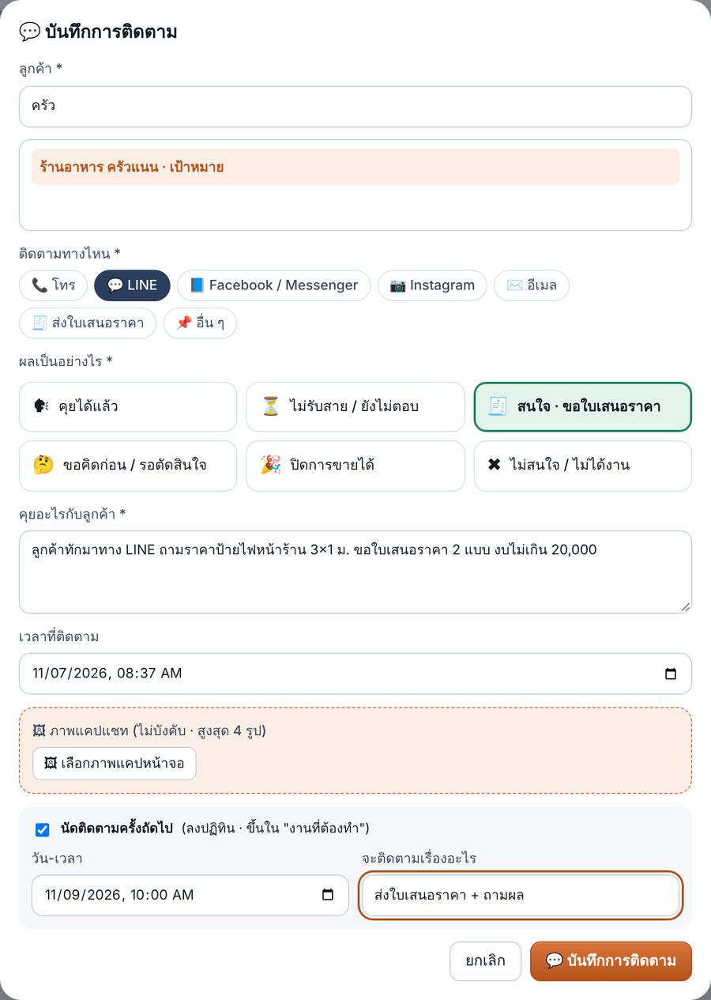
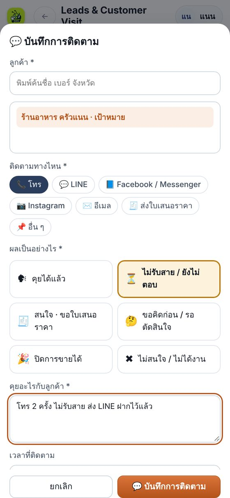
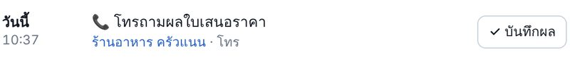
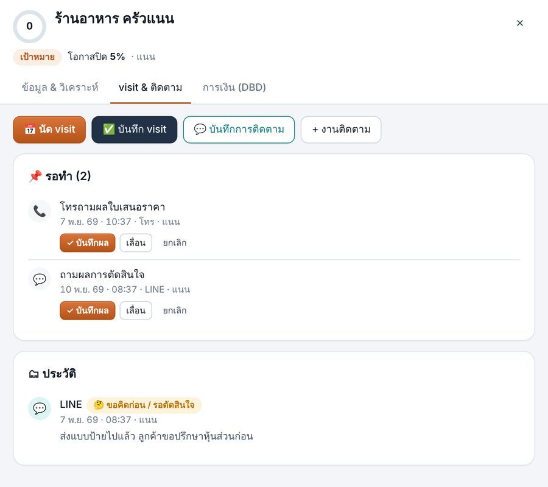
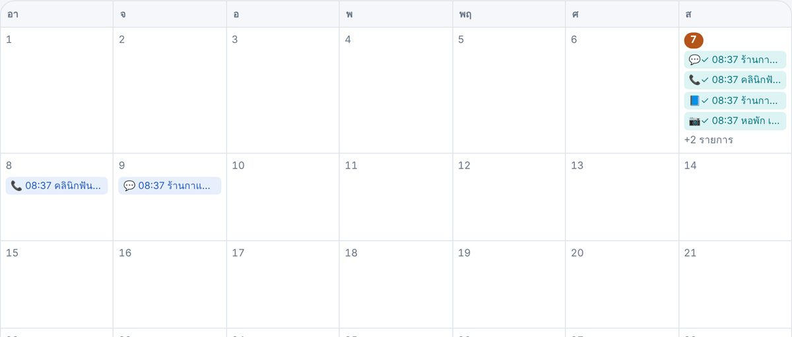

บันทึกการติดตามลูกค้า ทางแชท · โทร
คุยกับลูกค้าทาง LINE, Facebook, Instagram หรือโทรเสร็จ ใช้เวลาไม่ถึง 1 นาทีบันทึกลงแอป ไม่ต้องออกไป visit ก็มีประวัติครบ หัวหน้าเห็นงาน และได้คะแนนใน Report & Ranking
1กดปุ่ม "💬 บันทึกการติดตาม"
มีปุ่มนี้ 3 ที่ กดที่ไหนก็ได้:
- หน้าภาพรวม ปุ่มใหญ่สีเขียวน้ำทะเลแถวบน
- หน้าปฏิทิน มุมขวาบน ข้างปุ่ม "วางแผน visit"
- แฟ้มลูกค้า แท็บ "visit & ติดตาม" (เลือกลูกค้าให้แล้ว ไม่ต้องค้นซ้ำ)

2กรอก 4 อย่าง แล้วกดบันทึก
- ลูกค้า พิมพ์ชื่อแล้วแตะเลือก
ยังไม่มีในระบบ? พิมพ์ชื่อแล้วกด "+ เพิ่ม … เป็นลูกค้าใหม่" ได้เลย - ติดตามทางไหน โทร · LINE · Facebook/Messenger · Instagram · อีเมล · ส่งใบเสนอราคา
- ผลเป็นอย่างไร แตะ 1 ช่อง (ดูตารางข้อ 4)
- คุยอะไรกับลูกค้า สั้น ๆ 1–2 ประโยค เช่น ขนาดป้าย งบ วันที่ต้องการ
ส่วนที่ไม่บังคับ:
- ภาพแคปแชท สูงสุด 4 รูป (ใช้เป็นหลักฐานว่าคุยอะไรไว้)
- นัดติดตามครั้งถัดไป ระบบตั้งวันให้ตามผลที่เลือก แก้ได้
- เวลาที่ติดตาม เป็นเวลาตอนนี้ ถ้าบันทึกย้อนหลังให้แก้เวลา

3บนมือถือก็ใช้ได้เหมือนกัน
เปิดแอปจากมือถือ ฟอร์มเดียวกัน ปุ่มใหญ่กดง่าย ปุ่ม "💬 บันทึกการติดตาม" สีส้มอยู่ล่างจอ
ตัวอย่างนี้: โทร 2 ครั้งลูกค้าไม่รับ → เลือก ⏳ ไม่รับสาย / ยังไม่ตอบ ระบบตั้งนัดโทรใหม่ให้พรุ่งนี้

4เลือกผลแล้ว ระบบทำอะไรต่อให้
| ผลการติดตาม | ขั้นการขาย | นัดครั้งถัดไป (ตั้งให้) |
|---|---|---|
| 🗣 คุยได้แล้ว | คงเดิม | อีก 3 วัน |
| ⏳ ไม่รับสาย / ยังไม่ตอบ | คงเดิม | พรุ่งนี้ |
| 🧾 สนใจ · ขอใบเสนอราคา | เป็น "เสนอราคาแล้ว" | อีก 2 วัน |
| 🤔 ขอคิดก่อน / รอตัดสินใจ | คงเดิม | อีก 5 วัน |
| 🎉 ปิดการขายได้ | เป็น "ปิดการขายได้" | ไม่ต้องนัด |
| ✖ ไม่สนใจ / ไม่ได้งาน | เป็น "ไม่ได้งาน" | ไม่ต้องนัด |
ขั้นการขายขยับไปข้างหน้าเท่านั้น ลูกค้าที่ปิดการขายแล้วจะไม่ถอยกลับ
5มีนัดติดตามค้างอยู่ → กด "✓ บันทึกผล"
งานติดตามที่นัดไว้จะขึ้นใน 📌 งานที่ต้องทำ (หน้าภาพรวม) และในแฟ้มลูกค้า พอติดตามเสร็จ กด ✓ บันทึกผล จะเปิดฟอร์มเดียวกับข้อ 2 โดยเลือกลูกค้าและช่องทางไว้ให้ บันทึกแล้วงานนั้นปิดเองค่ะ

6ดูย้อนหลังในปฏิทินและแฟ้มลูกค้า
ปฏิทิน การติดตามที่บันทึกแล้วเป็นแถบสีเขียวน้ำทะเล ✓พร้อมไอคอนช่องทาง ส่วนนัดที่ยังไม่ถึงเป็นแถบสีฟ้า
แฟ้มลูกค้า แท็บ "visit & ติดตาม" ส่วน "ประวัติ" แสดงช่องทาง ผล วันเวลา คนบันทึก สรุป และภาพแคปแชท
รายงาน มีตัวเลข "ติดตามทางแชท/โทร" ในช่วงที่เลือก


7คะแนนใน Report & Ranking
Sale support ที่ตอบแชท
ทีมขาย online (เซลส์ที่วัดแชท)
นับตามวันที่กดบันทึก · Sale B2B ที่ออก visit จริงยังนับจาก visit เหมือนเดิม
?คำถามที่พบบ่อย
ลูกค้าคุยทาง Ant-Connect อยู่แล้ว ต้องบันทึกซ้ำไหม
บันทึกเฉพาะครั้งที่เป็นการ "ติดตาม" ลูกค้า เช่น ทักถามผลใบเสนอราคา โทรนัดส่งแบบ ไม่ต้องบันทึกทุกข้อความที่ตอบแชท
พิมพ์ชื่อลูกค้าแล้วขึ้นว่า "เป็นลูกค้าที่เซลส์คนอื่นดูแล"
ลูกค้ารายนั้นมีเจ้าของแล้ว ให้หัวหน้าโอนลูกค้าให้ก่อน หรือแจ้งเซลส์เจ้าของ
ลืมบันทึกเมื่อวาน บันทึกย้อนหลังได้ไหม
ได้ แก้ "เวลาที่ติดตาม" เป็นเวลาที่คุยจริง (ใส่เวลาในอนาคตไม่ได้) คะแนนนับวันที่กดบันทึก
ต้องใส่ภาพแคปแชททุกครั้งไหม
ไม่บังคับ ใส่เมื่อมีรายละเอียดสำคัญ เช่น ขนาด ราคา ที่ตกลงกันไว้
มีค่าใช้จ่าย AI ไหม
ไม่มี ส่วนนี้ไม่ใช้ AI
Leads & Customer Visit · มดงานการป้าย · คู่มือ v1.5.0